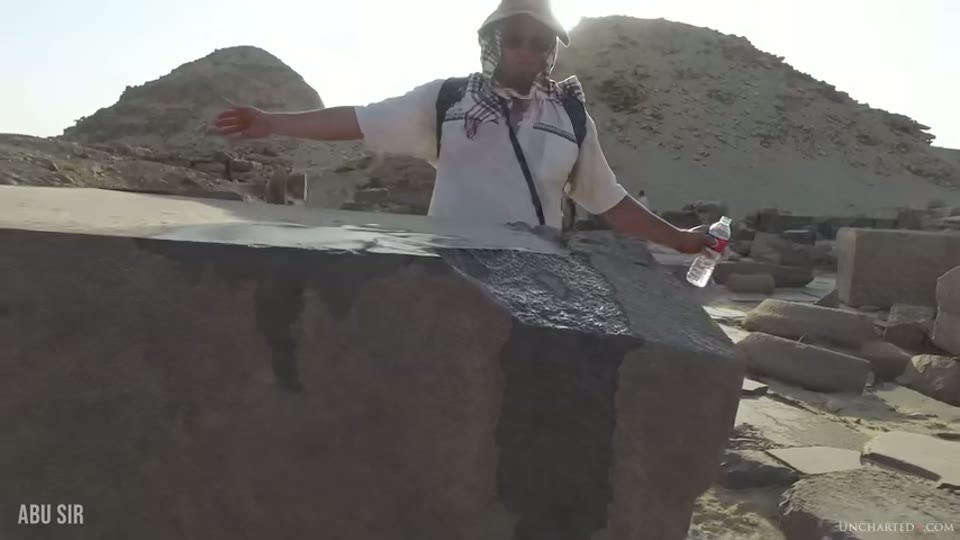
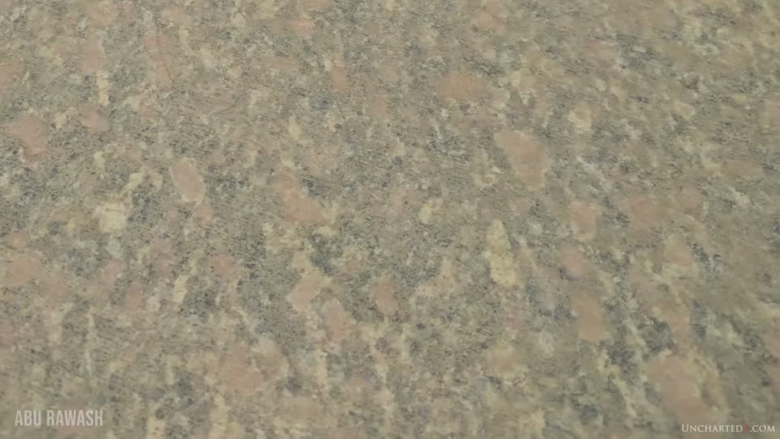
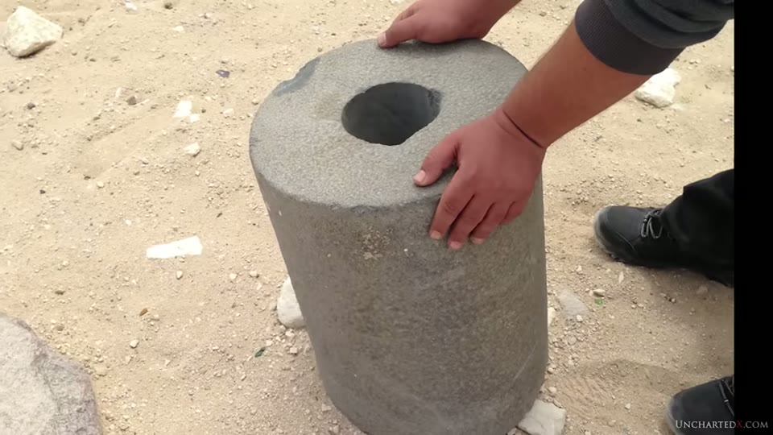
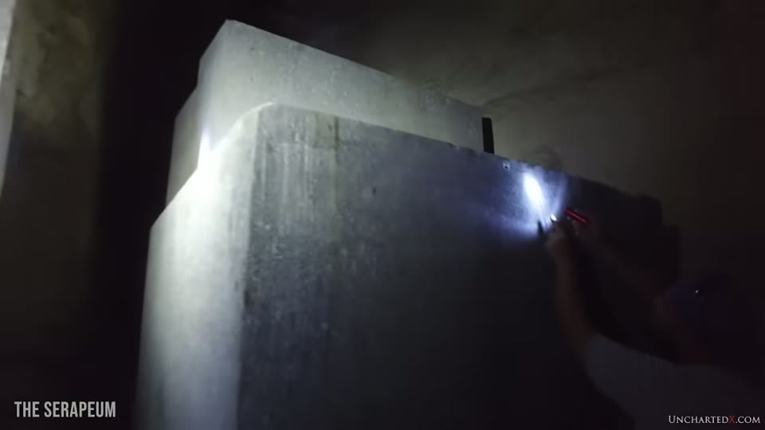
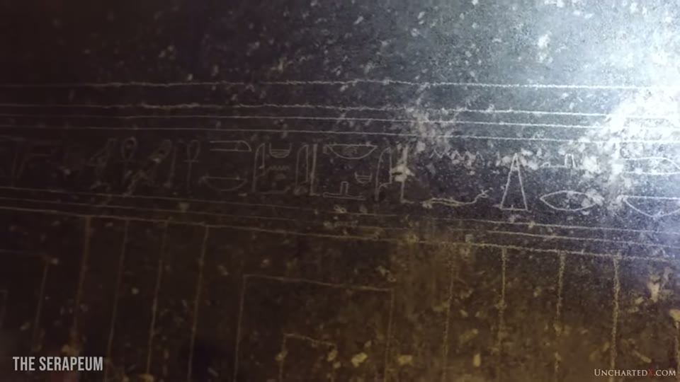

UnchartedX
Evidence for Ancient High Technology - Part 1: Machining
Ben · 47 min · watch on YouTube · summarised 2026-09-30
Part one of three, and the most-watched video in this channel's selection at 2.17 million views. It is two things bolted together. The first twenty minutes are an argument about how the past is studied and who is allowed to study it. The remaining twenty-five are the evidence, grouped into saw cuts, tube drills, overcuts, polishing and writing. Part two is announced at the end 45:43–46:30 and is about precision, vases and moving heavy stone; it is held as the precision entry, and a third followed on quarrying and moving, held as the logistics entry. The granite box used in this video's own thumbnail gets a video to itself nearly three years later, held as the Elephantine entry.
He defines the term narrowly at the start 06:23–08:30, and the definition is worth having because it rules things out:
"I'm not talking about lasers or spacecraft or mystical energies and crystals. I'm talking about the verifiable and measurable evidence of advanced tooling and machining of very hard types of stone, and the advanced construction methodologies that must have been used in the creation of various forms of ancient megalithic architecture or artifacts."
And he says plainly where his position comes from 03:07–04:13: from Flinders Petrie, Christopher Dunn, the stonemason Yousef Awyan and Randall Carlson, whom he describes as an architect — "it is on this basis, on the opinion of a long list of qualified experts, and not those of mainstream archaeology or anthropology, that I too believe…"
The first half: the argument about archaeology
The circular-argument charge 04:57–06:10 is the load-bearing one, and it is stated as a paraphrase of the position he is objecting to:
"The Old Kingdom granite monoliths, like columns and boxes, must have been made by copper chisels and pounding stones, because that's what we know that they had. There's no proof they did it any differently."
Against it he sets what he says is already in hand: "we have the objects, which is the result of the tools, and we have the markings, which is the signature from the tools." His summary of how the question gets closed: "just ask where are the tools and walk away."
The clip he cuts to next is credited on screen, and the credit says more than the narration does. A woman in a museum gallery says "if you're asking about the analysis of the inside of the vases — we only dealt with the contents, we haven't worked on the techniques used to make the vases." The editor captions her Guillemette Andreu-Lanoë, Egyptian Antiquities Curator, Musée du Louvre in Paris, and captions the source 'The Revelation of the Pyramids' — Jacques Grimault — 2010. Neither the speaker nor the film is named in the narration. The vases she is talking about are the subject of the precision vases entry. The same shot is cut into the vase scan update entry three years later with the name caption gone, the director gone, and the year reading 2011.

That a museum curator says the making of the objects has not been studied — and where the clip comes from.
Göbekli Tepe 10:59–14:49 is offered as the case where a date was absorbed rather than acted on: eleven-thousand-year radiocarbon dating, deliberate burial, pillars of 10 to 50 tons, and a Wikipedia entry still attributing the site to Neolithic hunter-gatherers. His charge is that the definition was moved rather than the conclusion — and his language here is at its least measured, describing the implied builders as "nomadic tribes of loincloth-wearing savages" doing "a bit of rock carving" as a weekend hobby. He credits Dr Martin Sweatman, author of Prehistory Decoded, with linking the site's artwork to constellation alignments and to the Younger Dryas, and reads the late Klaus Schmidt's formula — a transition from hunter-gatherers to an agricultural society — as a careful way of saying civilisation. The site's own excavation record is held as the Göbekli Tepe entry.
The longest single section of the first half is about one Wikipedia article 14:49–18:51. The claim: that Professor John Hoopes wrote 27 pages of articles for the Society for American Archaeology attacking Graham Hancock's America Before by association rather than on the arguments; that he recommends the public read the Wikipedia entry on the Younger Dryas impact hypothesis as an unbiased source; and that he has been writing that entry himself. "Just click on the revision history of the document on Wikipedia and the proof is right there."
He then shows it, and the frames are legible. The browser is on en.wikipedia.org/w/index.php?title=Younger_Dryas_impact_hypothesis&action=history, and a run of consecutive edits by a user Hoopes between 26 May and 12 June 2019 is highlighted in blue by the presenter. Their byte counts and edit summaries can be read: +2,067 "History of the hypothesis: Addition of history about Halley, Whiston, and Donnelly", +1,483 "In popular culture: Addition of information about Graham Hancock's books", +667 "Added section on 'In popular culture'", −653 "Edits to section in order to tighten language and reduce redundancy", +174 "In popular culture: Additional information on 'America Before'". The other editors visible in the same list are Doug Weller, SummerPhDv2.0, Bkobres, FeanorStar7 and several IP addresses.

action=history. A dated list of edits fills the page; the second row reads "23:35, 29 July 2019 Hoopes (talk | contribs) . . (55,933 bytes) (+4) . . (→Supposed impact crater in Greenland: italicized magazine title.)". Other rows name Doug Weller, SummerPhDv2.0, FeanorStar7, Bkobres and several IP addresses.no · UnchartedX watermark, lower right
That the academic who recommends the Wikipedia article as unbiased has been editing it.
He also names George Howard and Mark Young's bibliography of Younger Dryas impact papers on the Cosmic Tusk website, and says it includes papers critical of the hypothesis as well as for it. The impact evidence itself is held as the Younger Dryas entry.
The section closes back on the tube drills, and on the claim that the establishment case against Petrie's spiral came down to "some deliberately manipulated and tilted photographs in a textbook" — which is argued in full in the tube drills entry, and revisited in its addendum.
Saw cuts
The evidence section opens at Abusir 21:45–23:10, with a basalt block in front of one of the pyramids. Ben pours water over the top to bring the surface up. What he says is there: a cut made by a blade with a distinctive circular arc, striations and grooves indicating a rapid rate of cutting, a cut that did not go all the way through, and a lip left at the edge only a few millimetres thick — which he reads as the thickness of the blade.
From the arc he estimates a tool diameter of 8 or 9 metres, 25 feet or more, and cites Christopher Dunn's estimates of saws up to 11 metres, over 30 feet. He thinks the block was never finished, and that other basalt blocks on the site were cut the same way and then polished until the marks were gone.


A saw cut in basalt, and the thin lip left at its edge.
Other saw cuts named: the basalt floor east of the Great Pyramid, with unfinished cuts in it; the granite box in the King's Chamber, with striations on top and faint lines on the side; and the unfinished box in the Egyptian Museum in Cairo, which has a large saw cut showing how a lid was being removed from the back of the block.
And one claim he cannot support, which he says on camera 25:20–25:40: "I've also seen photos of circular saw marks made into stone at Tiahuanaco and Puma Punku in Bolivia, although I can't seem to find the photographs that I've seen of them, despite searching around a fair bit. Maybe you guys can help me out in the comments section below."
The mainstream alternative, as he states it 26:55–28:45: a two-man copper or bronze saw pushed back and forth with sand. His objections are five, and they are mechanical rather than historical — that it is a grinding action and not a cutting one; that the marks are consistent in radius, so the tool was held firmly; that a blade only millimetres thick could not be copper or bronze and still cut basalt; that it would take far too long; and that many of the blocks cut this way are too large to work by hand.
He also distinguishes the quarry marks that are everywhere on these sites 26:08–26:40: a dashed line of small hollows cut into the rock, "usually with steel chisels", into which wood is driven and wetted so that it swells and cracks the block.
The most complex signature he offers is at Abu Rawash 28:45–30:00: a granite slab with the same circular saw grooves, and on the cut surface a second, vertical cut leaving a machined lip with a slight but consistent concave arc — a two-stage process. "Frankly it bends my mind a little bit trying to imagine just how this series of cuts were made." His own footage of the slab is shown, and so is Dunn's published photograph of it, captioned in the book "Figure 10.30. Stone at Abu Roash with machined step", with the cover of Lost Technologies of Ancient Egypt beside it.


A two-stage machined cut in granite — and the published photograph of it.
Tube drills, and a block that is no longer there
30:14–32:20. The tube drill argument is not re-run — he refers the viewer to the documentary — but three things are added.
Outside Egypt: core drill holes in the andesite and granite of the Coricancha in Cusco, which also appear in the tube drills addendum; small precise drill holes in the andesite at Puma Punku, held as the Puma Punku entry; and reports and images from elsewhere including Europe. His own suggestion for what would settle them is instrumental: "I think that all of these examples could benefit from lidar or hyperspectral imaging tests."
At the large end: a coffer in the Egyptian Museum with four massive tube drill holes bored into it, and a core with a smaller tube drill hole bored through it — the same class of object the addendum ends on.
And one that has gone. A block with a hole drilled into a larger piece, filmed at Giza being shown by Yousef Awyan: "sadly this block is now missing. It's no longer at Giza — at least we couldn't find it. And this is an all too common occurrence for evidence that doesn't really fit the mainstream narrative."

A drilled block filmed at Giza that the presenter says is no longer there.
Overcuts 32:20–33:05 are offered as the simplest form of the same argument: if it takes days of grinding to remove a small amount of granite, cuts that run past where they needed to stop are hard to account for. He locates them under the arms of statues and at the edges of their seats, along with tube drill holes between the feet.
The last machining example is a slab tucked in a corner at Abusir 33:05–34:00 where, he says, blades have dipped into the material and backed out and cuts have been adjusted. "I can only describe this block as having been machined." He adds a worry about it: "I really hope this slab is left where it is. It seems small enough that it could be relatively easily carried away."

A slab the presenter describes as machined: flat faces, sharp angles, tool marks.
Polishing
34:00–38:30. The claim is that a mirror finish on granodiorite is not a natural state and takes several distinct stages, and that the Serapeum of Saqqara shows all of them because some of its twenty-four boxes were never finished — which also means the finishing was done in place, underground, in tight quarters.
A large black granite box with a crack in one end is used to show the rough machining stage followed by a finer one that flattened the surface without polishing it. The undersides of lids show the same intermediate finish with fine tool lines in it. Then the polish itself.
The liquid marks are the part he flags as astonishing: pooling marks on the underside of a lid that are "noticeably smoother than the surrounding material", which he says rules out a varnish or a coating. The Serapeum boxes and this claim are held as the Serapeum entry. This passage carries burned-in subtitles over the on-site speech, as does the polishing-stages sequence.

That some of the Serapeum boxes were left at an unfinished stage of surface work.
The accepted explanation, as he gives it: rubbing sand and rocks onto the surface. He allows that this might work for a flat surface — "never mind how you got the surface flat in the first place" — and his objection is the shape rather than the labour: the complex, irregular, non-flat surfaces on these objects are polished as well as the flat ones.
The writing, which is the strongest part
38:30–45:20. This is the two-industries argument in its cleanest form, and it needs no measurement to see.
Statues in the Egyptian Museum, in stone harder than granite, are polished on every surface — the rib cage, the chest, the inside of the fingernails, the lotus motif on the side of a throne. The glyphs cut into the same objects carry "the signature and the marks that handheld chisels leave" and are, in his words, "generally always pretty rough work". And: "the writings are never polished, even in large symbols with plenty of space."

The two levels of workmanship on one object.
He puts it at the Serapeum as a question 40:45–41:10: if the builders could make perfectly straight lines and perfectly square corners in the object itself, "why then couldn't they manage to draw a straight line on the outside of the box?" His answer is that the writing came later, from a culture that could not work the stone the same way.
Yousef Awyan carries it from there 41:10–45:20 — a master stonemason, described as a Kemetologist and the son of Hakim Awyan. His statement, delivered on camera:
"As a stone carver, and someone who's been studying this, I haven't seen really any writings and hieroglyphics — even the best quality ones, which I love so much, relief or high relief — that reflects power tools. I have seen it in statues and in boxes and in slabs, but I haven't seen it yet in any writing. I know how it was done."
Ben adds the nuance himself rather than leaving it out 42:47–43:45: dynastic Egypt lasted thousands of years and eventually developed iron tools and the ability to do very fine work in hard stone; being a scribe or a carver would have been a lifelong trade taking decades to master; and that proficiency extended to erasing old glyphs and replacing them, which he illustrates with an obelisk fragment at Tanis where a bird glyph is being blended into existing writing. He names the carving on an obelisk at Karnak as genuinely excellent work.
Where he lands 44:24–45:20: the writing is "without fail always used to date the sites and to date the objects", and at the Serapeum the box with writing on it is treated as the most valuable. His own description of that box: "a priceless high technology ancient object that was inherited and then vandalised with a chisel by a later and far less capable ancient culture."

The writing on the box that is treated as the site's most valuable.
The same case is argued at length in the Serapeum entry, nine months earlier, with the same three points and the same Yousef Awyan testimony. One thing that video carries and this one does not: his own Egyptian guide, on camera, declines the conclusion.
What you can check yourself
- The Wikipedia revision history is public. The page, the date range and the editor name are all legible on screen, and the full history — including who wrote what and how much — can be read by anyone. So can the article as it stands now.
- The Cosmic Tusk bibliography is a public list of papers with links, and whether it includes critical papers is a matter of opening it.
- The Abusir block. Pouring water over a weathered stone to raise the surface is a thing any visitor can do, and the arc, the striations and the thin lip at the edge are photographable.
- The arc itself gives the diameter. Measuring the sagitta and chord of a curved cut and solving for the radius is arithmetic, and it can be done on a photograph with a scale in it.
- The Abu Rawash slab is at a named Old Kingdom site, and Dunn's photograph of it is published with a figure number.
- The unfinished box in the Egyptian Museum, the coffer with four tube drill holes, and the statues with polished fingernails and chiselled glyphs are all on public display.
- The Serapeum boxes. That some are polished and some are not, and that the writing is rougher than the surface it is cut into, is visible to anyone allowed in.
- Göbekli Tepe's radiocarbon dates are published, as is the current attribution.
What the video does not settle
- No measurement is taken anywhere in the video. The blade thickness, the saw diameter, the flatness, the polish and the overcuts are all described and none is gauged, scanned or dimensioned on camera. The 8-to-9-metre estimate is made by eye from an arc that is not marked.
- The saw arc is not resolvable in the frames. The Abusir block is shown wet and from a distance, and the circular curvature the estimate depends on does not read in a still.
- The tool is inferred from the mark, and the mark is not shown against a known one. No modern cut, no reproduction and no comparison sample appears anywhere in the video.
- The Tiahuanaco and Puma Punku saw marks are asserted with the photographs missing, which the presenter states plainly and asks the audience for help with.
- The Abu Rawash two-stage cut is shown partly through a book plate, so what is being read is Dunn's photograph and Dunn's caption as well as the object.
- The liquid-mark claim has no analysis behind it in this video. Nothing is sampled, and the statement that the marks are smoother than the surrounding stone is made by eye and by touch.
- The dating of everything rests on the layering argument. That the polished objects predate the writing on them is the conclusion, and no independent date is offered for either — the argument is entirely from relative capability.
- The Hoopes material is about one author and one article. What appears on screen is the revision history of a single Wikipedia page over three weeks in 2019, and the twenty-seven pages of articles are described rather than shown.
- The Göbekli Tepe section argues from a Wikipedia summary rather than from the excavation reports, and the pillar weights and the eleven-thousand-year date are stated without a citation on screen.
- The missing Giza block is unverifiable from the video. It is shown in older footage and said to be gone; no accession record, report or search is presented.
Names heard rather than read
The caption track is the 2020 kind — punctuated but unreliable on proper nouns. Ten reconstructions:
| written here | as the captions give it |
|---|---|
| Abusir | "aboo-seer", "Abu Cyr", "abbaseya", "average sear", "Abby's ear" |
| Abu Rawash | "a beaver wash", "a Burrell wash" |
| the Serapeum | "the Sarah pium", "the Serra pium", "syrupy" |
| Yousef Awyan | "Yousef Iowan", "Youssef Eowyn", "use of a 1", "yusuf" |
| Hakim Awyan | "Hakim la1" |
| Göbekli Tepe | "gobekli tepe" (lower case throughout) |
| Martin Sweatman | "Martin Swetman" |
| John Hoopes | "john hoops" |
| hieroglyphs | "horror glyphs" |
| granodiorite | "grano diorite" |
Four things were read off the screen rather than reconstructed. The Louvre curator's name and job title, and the title and date of the documentary her clip comes from, are all in the editor's caption. The Wikipedia URL, the editor name and the byte counts are legible in the browser window. Dunn's figure number and caption are printed on the book plate. And the editor's own location captions — ABU SIR, ABU RAWASH, CAIRO MUSEUM, THE SERAPEUM, SAQQARA — name every site in the evidence half.
Two identifications are not confirmed on screen. The second voice in the catastrophism clip 09:37–10:59 is not captioned and is not named in the narration. And in the Saqqara footage where Yousef Awyan speaks, nobody in frame is labelled; which man is which comes from the narration alone.